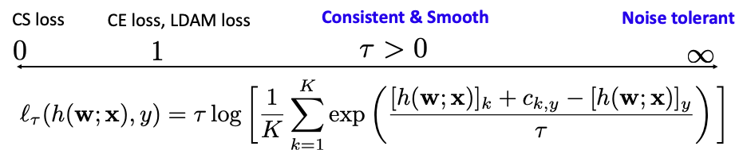

Section 2.1: Empirical Risk Minimization
What is Machine Learning? In 1959, Arthur Samuel, a pioneer in the field of machine learning (ML), defined Machine Learning as the “field of study that gives computers the ability to learn without being explicitly programmed”.
Nowadays, machine learning has become the foundation of AI. The essence of machine learning is to learn a model by optimizing an objective function on training data, with the goal of achieving strong generalization to unseen data. Optimization plays a fundamental role in machine learning, as it underpins (1) the formulation of objective functions, (2) the development of optimization algorithms, and (3) the analysis of generalization error in learned models. While (3) is an important subject of ML, this book focuses on (1) and (2). Below, we will use the traditional label prediction problem to illustrate the three components.
Label Prediction
In supervised learning, the primary objective is often to learn a predictive model from a given set of supervised training data. Let us consider a classical label prediction problem. Denote by \((\mathbf{x}, y)\) a data-label pair, where \(\mathbf{x} \in \mathcal{X} \subset \mathbb{R}^{d_0}\) denotes the input feature vector, and \(y \in \mathcal{Y} = {1, \ldots, K}\) is the corresponding label. The goal is to learn a predictive model parameterized by \(\mathbf{w} \in \mathbb{R}^d\) (e.g., a deep neural network), which induces a scoring function \(h(\mathbf{w}; \cdot): \mathcal{X} \to \mathbb{R}^K\).
A classical framework for learning such a model is the well-known empirical risk minimization (ERM), which minimizes the empirical risk over the training dataset. To this end, a pointwise loss function \(\ell(h(\mathbf{w};\mathbf{x}), y)\) is defined to measure the discrepancy between the model’s prediction \(h(\mathbf{w}; \mathbf{x})\) and the true label \(y\). Given a training dataset \(\mathcal{S} = {(\mathbf{x}_1, y_1), \ldots, (\mathbf{x}_n, y_n)}\), the ERM problem is formulated as:
\[\begin{align}\label{eqn:erm} \min_{\mathbf{w} \in \mathcal{W}} \mathcal{R}_{\mathcal{S}}(\mathbf{w}) := \frac{1}{n} \sum_{i=1}^n \ell(h(\mathbf{w}; \mathbf{x}_i), y_i). \end{align} \]
Discriminative Loss Functions
The central element of ERM is the design of the loss function. A common strategy of designing a loss function for label prediction is through a discriminative approach. Below, we introduce several discriminative loss functions.
Logistic Loss
A parameterized probabilistic model is defined to represent the
probability of a class label for a given data point as
\[\begin{align}\label{eqn:dpm-class} \Pr(y|\mathbf{x}; \mathbf{w}) = \frac{\exp([h(\mathbf{w}; \mathbf{x})]_y)}{\sum_{l=1}^K\exp([h(\mathbf{w}; \mathbf{x})]_l)}, \end{align}\]
where \([\cdot]_k\) denotes the \(k\)-th element of a vector. The associated loss is derived from the negative log-likelihood, resulting in the multi-class logistic loss, also known as the cross-entropy (CE) loss:
\[\begin{align}\label{eqn:lsr} \ell(h(\mathbf{w}; \mathbf{x}), y) = -\log\frac{\exp([h(\mathbf{w}; \mathbf{x})]_y)}{\sum_{l=1}^K\exp([h(\mathbf{w}; \mathbf{x})]_l)}. \end{align}\]
The resulting method by ERM is commonly referred to as logistic regression. For binary classification, this loss becomes the binary logistic loss \(\ell(h(\mathbf{w}; \mathbf{x}), y) = \log(1 + \exp(-y h(\mathbf{w}; \mathbf{x})))\), where \(h(\mathbf{w}; \cdot) \in \mathbb{R}\) and \(y \in \{1, -1\}\).
Max-Margin Loss
The max-margin loss, introduced by Crammer and Singer and commonly
referred to as the Crammer-Singer (CS) loss, is defined as:
\[\begin{align} \ell(h(\mathbf{w}; \mathbf{x}), y) = \max\left(0, \max_{k \neq y}\left(c_{k,y} + [h(\mathbf{w}; \mathbf{x})]_k - [h(\mathbf{w}; \mathbf{x})]_y\right)\right), \end{align}\]
where \(c_{k,y} > 0\) is a margin parameter. This loss seeks to ensure that the prediction score for the ground-truth label, \([h(\mathbf{w}; \mathbf{x})]_y\), exceeds the scores of other class labels, \([h(\mathbf{w}; \mathbf{x})]_k\) for \(k \neq y\), by at least the margin \(c_{k,y}\). This method is also known as the multi-class support vector machine. For binary classification, it reduces to the standard hinge loss \(\ell(h(\mathbf{w}; \mathbf{x}), y) = \max(0, 1 - y h(\mathbf{w}; \mathbf{x}))\) for \(h(\mathbf{w}; \cdot) \in \mathbb{R}\) and \(y \in \{1, -1\}\).
Label Distributionally Robust (LDR) Loss
Both the CS loss and the CE loss have their pros and cons. For example,
the CS loss with the margin parameters is more flexible in controlling
the discrimination between classes, while it is not consistent and
non-smooth in terms of the prediction scores. The CE loss is smooth and
consistent but lacks robustness to noise in class labels.
🔍 Consistency
The consistency measures whether
minimizing a surrogate loss \(\ell(h(\mathbf{x}), y)\) with an increasing
number of training examples converges to that which minimizes the Bayes
error, i.e., Bayes optimal classifier \(h^* =
\arg\min \mathbb{I}(y \neq h(\mathbf{x}))\) for \(h: \mathcal{X} \rightarrow
\mathcal{Y}\).
In fact, the strengths and limitations of both the CE and CS losses can be better understood within a broader family known as the label-distributionally robust (LDR) loss:
\[\begin{align}\label{eqn:ldr} \ell_\tau(h(\mathbf{w}; \mathbf{x}), y) = \max_{\mathbf{p} \in \Delta} \sum_{k=1}^K p_k \left([h(\mathbf{w}; \mathbf{x})]_k - [h(\mathbf{w}; \mathbf{x})]_y + c_{k,y}\right) - \tau \sum_{k=1}^K p_k \log(p_k K), \end{align}\]
where \(\tau > 0\) is a hyperparameter, \(c_{y,y} = 0\), \(\mathbf{p} \in \mathbb{R}^K\) is the label distributional weight vector, and \(\Delta_K = \{\mathbf{p} \in \mathbb{R}^K : p_k \geq 0, \sum_{k=1}^K p_k = 1\}\) is a simplex.
It is clear that the LDR loss is defined by solving an optimization problem. Indeed, the above optimization problem follows the distributionally robust optimization (DRO) principle, which is widely used at the level of data as discussed in Section 2.2. By treating label as a kind of data, we can unify the LDR loss with other losses discussed later in Section 2.4.
A closed-form solution for \(\mathbf{p}\) can be derived using the KKT conditions (cf. Example 16, making the LDR loss equivalent to:
\[\begin{align}\label{eqn:ldr-kl} \ell_\tau(h(\mathbf{w}; \mathbf{x}), y) = \tau \log\left[\frac{1}{K} \sum_{k=1}^K \exp\left(\frac{[h(\mathbf{w}; \mathbf{x})]_k + c_{k,y} - [h(\mathbf{w}; \mathbf{x})]_y}{\tau}\right)\right]. \end{align}\]
From the perspective of DRO, we can define a more general family of LDR losses using different regularization functions on \(\mathbf{p}\) and constrained domains \(\Omega\):
\[\begin{align}\label{eqn:ldr-g} \bar\ell_\tau(h(\mathbf{w}; \mathbf{x}), y) = \max_{\mathbf{p} \in \Omega} \sum_{k=1}^K p_k \left([h(\mathbf{w}; \mathbf{x})]_k - [h(\mathbf{w}; \mathbf{x})]_y + c_{k,y}\right) - \tau R(\mathbf{p}). \end{align}\]
💡 Why it matters:
-
The LDR loss (\(\ref{eqn:ldr-kl}\)) unifies both the CS and CE losses as special cases. Specifically, the CE loss is recovered when \(\tau = 1\) and \(c_{k,y} = 0\) for all \(k\), while the CS loss corresponds to the case \(\tau = 0\).
Moreover, the LDR loss encompasses the Label-Distribution-Aware Margin (LDAM) Loss when \(\tau = 0\), \(c_{y,y} = 0\), and \(c_{k,y} = c_y \propto 1 / n_y^{1/4}\) for \(k \neq y\), where \(n_y\) denotes the number of samples in class \(y\):\[ \ell_{\text{LDAM}}(h(\mathbf{w}; \mathbf{x}), y) = -\log\left(\frac{\exp([h(\mathbf{w}; \mathbf{x})]_y - \frac{C}{n_y^{1/4}})}{\exp([h(\mathbf{w}; \mathbf{x})]_y - \frac{C}{n_y^{1/4}}) + \sum_{l \neq y} \exp([h(\mathbf{w}; \mathbf{x})]_l)}\right), \]
where \(C\) is a constant. For imbalanced datasets, this assigns larger margins \(c_y\) to minority classes, making it more suitable for handling class imbalance. - The LDR loss provides insights into the strengths and limitations of CE and CS losses. The regularizer \(R(\mathbf{p}) = \sum_{k=1}^K p_k \log(p_k K)\) is strongly convex in \(\mathbf{p}\), which implies smoothness of the loss in terms of prediction scores due to the duality between smoothness and strong convexity (Lemma 1.7). This strong convexity also contributes to the statistical consistency of the loss. In contrast, the CS loss with \(\tau = 0\) lacks this property and hence suffers from non-smoothness and inconsistency.
-
The LDR loss framework enables the design of new losses that are robust to label noise. For instance, when \(\tau \to \infty\), the LDR loss reduces to:
\[ \ell_\infty(\mathbf{w}; \mathbf{x}, y) = \frac{1}{K} \sum_{k=1}^K \left([h(\mathbf{w}; \mathbf{x})]_k - [h(\mathbf{w}; \mathbf{x})]_y + c_{k,y}\right). \]
A remarkable property of this loss is its symmetry: \(\sum_{y=1}^K \ell_\infty(\mathbf{w}; \mathbf{x}, y)\) is constant. This symmetry serves as a sufficient condition for robustness to uniform label noise. However, by treating all negative labels equally, it may limit the model’s ability to focus on hard negative labels and potentially slow down the learning process. In practice, it is better to tune \(\tau\) if there is label noise.
In conclusion, the LDR loss offers flexibility in achieving three desirable properties: max-margin, consistency, and symmetry. In practice, when tuning \(\tau \in (0, \infty)\), it may be beneficial to normalize the prediction scores \(h(\mathbf{w}; \mathbf{x})\).
It is worth noting that all the discussed losses are discriminative in nature, aiming to increase the score \([h(\mathbf{w}; \mathbf{x})]_y\) of the true label while decreasing the scores \([h(\mathbf{w}; \mathbf{x})]_k\) of the negative labels (\(k \neq y\)).

Figure: The LDR loss and its special cases by varying
\(\tau\).
Optimization Algorithms
To address the ERM problem in the context of large-scale data (i.e., a substantial number of training examples), first-order stochastic algorithms are commonly employed. These include stochastic gradient descent (SGD), stochastic momentum methods, and adaptive gradient methods. For instance, the update rule of classical SGD for solving (\(\ref{eqn:erm}\)) with \(\mathcal{W} = \mathbb{R}^d\) is given by:
\[\begin{align} \mathbf{w}_{t+1} = \mathbf{w}_t - \eta_t \frac{1}{|\mathcal{B}_t|} \sum_{(\mathbf{x}_i, y_i) \in \mathcal{B}_t} \nabla \ell(h(\mathbf{w}_t; \mathbf{x}_i), y_i), \quad t = 1, \ldots, T \end{align}\]
where \(\eta_t \geq 0\) is the learning rate (or step size), and \(\mathcal{B}_t\) denotes a random mini-batch data sampled from the full dataset. The concern of designing an optimization algorithm is how fast the algorithm can converge to a (near) optimal solution. We will discuss the design and analysis of classical stochastic optimization algorithms in Chapter 3.
Critical Assumption:
A critical assumption in conventional stochastic optimization algorithms
such as SGD is that the gradient of each individual loss \(\nabla \ell(h(\mathbf{w}; \mathbf{x}_i),
y_i)\) can be easily computed. This assumption will fail for the
logistic loss when the number of classes \(K\) is gigantic, e.g., millions or even
billions. This will be addressed in this book.
Generalization Analysis
To study the generalization of a model learned by solving ERM, we usually consider the expected risk defined as
\[\begin{align}\label{eqn:pr} \mathcal{R}(\mathbf{w}) = \mathbb{E}_{\mathbf{x}, y \sim \mathbb{P}}[\ell(h(\mathbf{w}; \mathbf{x}), y)]. \end{align}\]
Let \(\mathbf{w} = \mathcal{A}(\mathcal{S}; \zeta)\) denote a learned model by a randomized algorithm \(\mathcal{A}\) for solving ERM that depends on random variables \(\zeta\). A standard measure of generalization is given by the excess risk defined as \(\mathcal{R}(\mathbf{w}) - \mathcal{R}(\mathbf{w}_*)\), where \(\mathbf{w}_* \in \arg\min_{\mathbf{w} \in \mathcal{W}} \mathcal{R}(\mathbf{w})\). The following lemma decomposes the excess risk into the optimization error and the generalization error.
Lemma 2.1
For a learned model \(\mathbf{w} = \mathcal{A}(\mathcal{S}; \zeta)\), we have:
\[\begin{align*} \mathcal{R}(\mathbf{w}) - \mathcal{R}(\mathbf{w}_*) \leq \max(\mathcal{R}(\mathbf{w}) - \mathcal{R}_{\mathcal{S}}(\mathbf{w}), \mathcal{R}_{\mathcal{S}}(\mathbf{w}_*) - \mathcal{R}(\mathbf{w}_*)) + \mathcal{R}_{\mathcal{S}}(\mathbf{w}) - \min_{\mathbf{u} \in \mathcal{W}} \mathcal{R}_{\mathcal{S}}(\mathbf{u}), \end{align*}\]
and
\[\begin{align*} \mathbb{E}_{\mathcal{S}, \zeta}[\mathcal{R}(\mathbf{w}) - \mathcal{R}(\mathbf{w}_*)] = \mathbb{E}_{\mathcal{S}, \zeta}[\mathcal{R}(\mathbf{w}) - \mathcal{R}_{\mathcal{S}}(\mathbf{w})] + \mathbb{E}_{\mathcal{S}, \zeta}[\mathcal{R}_{\mathcal{S}}(\mathbf{w}) - \min_{\mathbf{u} \in \mathcal{W}} \mathcal{R}_{\mathcal{S}}(\mathbf{u})]. \end{align*}\]
Proof.
\[\begin{align*} \mathcal{R}(\mathbf{w}) - \mathcal{R}(\mathbf{w}_*) &= \mathcal{R}(\mathbf{w}) - \mathcal{R}_{\mathcal{S}}(\mathbf{w}) + \mathcal{R}_{\mathcal{S}}(\mathbf{w}) - \min_{\mathbf{u} \in \mathcal{W}} \mathcal{R}_{\mathcal{S}}(\mathbf{u}) + \min_{\mathbf{u} \in \mathcal{W}} \mathcal{R}_{\mathcal{S}}(\mathbf{u}) - \mathcal{R}(\mathbf{w}_*) \\ &\leq \mathcal{R}(\mathbf{w}) - \mathcal{R}_{\mathcal{S}}(\mathbf{w}) + \mathcal{R}_{\mathcal{S}}(\mathbf{w}) - \min_{\mathbf{u} \in \mathcal{W}} \mathcal{R}_{\mathcal{S}}(\mathbf{u}) + \mathcal{R}_{\mathcal{S}}(\mathbf{w}_*) - \mathcal{R}(\mathbf{w}_*). \end{align*}\]
Taking expectation over \(\mathcal{S}, \zeta\) yields the second identity.
- Generalization error: the difference between expected and empirical risk.
- Optimization error: \(\mathcal{R}_{\mathcal{S}}(\mathbf{w}) - \min_{\mathbf{u} \in \mathcal{W}} \mathcal{R}_{\mathcal{S}}(\mathbf{u})\).
Bounding the (expected) optimization error is a central focus of this book, approached through the analysis of stochastic optimization algorithms. A discussion of the literature on generalization error analysis will be provided at the end of this chapter.